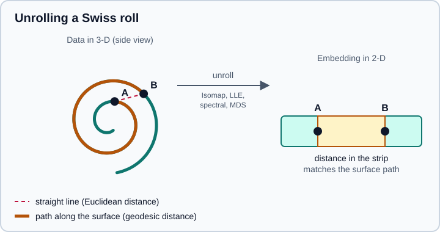

Manifold Learning
|
This content was generated with the assistance of AI and should be verified against the official documentation before being relied on in production. |
Many datasets have far more columns than real degrees of freedom: a photograph of a rotating object has thousands of
pixels but only one angle that matters. Manifold learning assumes the data lies close to a low-dimensional curved
surface (a manifold) embedded in the high-dimensional space, and tries to recover coordinates on that surface. Linear
methods such as PCA (see PCA, TruncatedSVD & NMF) can only rotate and
project the data; manifold methods can "unroll" a curled sheet. This page covers the sklearn.manifold module of
scikit-learn 1.9 (checked in October 2026 against 1.9.1, Python 3.13, NumPy 2.5.4),
how each estimator works, how to pick one, how to tune t-SNE, and the pitfalls. Examples target Python 3.13 or 3.14 and were run on Python 3.13. Every example was run on those versions
and the printed output is real.
The module is mostly an exploration and visualisation tool. Several estimators cannot embed new points at all, so they do not fit well inside a prediction pipeline; the page says which ones can. For the wider picture of unsupervised methods see Clustering, PCA, TruncatedSVD & NMF and Choosing the Right Estimator; for the conceptual side see Machine Learning Fundamentals.
The idea: distances along the surface
Take a Swiss roll: a flat sheet rolled into a spiral. Two points on neighbouring turns of the roll are close in straight
(Euclidean) distance but far apart if you must walk along the sheet. A method that trusts straight-line distance, such as
PCA, will squash the turns on top of each other. Manifold methods build a neighbourhood graph (each point is connected to
its n_neighbors closest points), and then preserve some property of that graph in a low-dimensional embedding.

The straight dashed line between A and B is the Euclidean distance, which cuts through the empty space between turns. The thick path is the distance along the surface (geodesic distance). After unrolling, the 2-D distance between A and B should match the thick path rather than the dashed line. Isomap does this explicitly, locally linear embedding and spectral embedding preserve local neighbourhoods instead, and t-SNE preserves neighbour probabilities.
The estimators at a glance
| Estimator | What it preserves | Strengths and limits | Embeds new data |
|---|---|---|---|
|
Geodesic (graph shortest-path) distances |
Global structure, few parameters; sensitive to short-circuits when noise bridges two turns |
Yes, |
|
Local linear reconstruction weights of each neighbourhood |
Variants |
Yes, |
|
Graph Laplacian eigenvectors (Laplacian eigenmaps) |
Good for clustered structure; embeds only the training set |
No ( |
|
Pairwise dissimilarities, by minimising stress (SMACOF) |
Works with any dissimilarity matrix; metric and non-metric variants; iterative and slower |
No ( |
|
Pairwise dissimilarities, by eigendecomposition (minimises strain) |
Direct, deterministic; equals PCA for Euclidean distances (new in 1.8) |
Yes, |
|
Neighbour probabilities (KL divergence) |
Excellent for 2-D visualisation of clusters; stochastic, no global distances, no |
No ( |
The "Embeds new data" column matters in practice. A method with only fit_transform cannot sit as a step in a
Pipeline that must later transform unseen rows, and it is not a feature extractor for a model that will predict on new
data. TSNE raises an AttributeError if you call transform; use it for pictures, not for features.
The docs give the cost of each method in terms of the number of samples N, the input dimension D, the neighbours k and the
output dimension d. Isomap is roughly O(N^2 (k + log N)) plus a dense eigenproblem of cost O(d N^2); LLE and spectral
embedding avoid the all-pairs path computation; exact t-SNE is O(d N^2) and the Barnes-Hut approximation is
O(d N log N). All of them are meant for datasets of thousands to tens of thousands of rows, not millions; subsample
first for larger data.
Prepare the data
All of these methods rely on nearest-neighbour search, so features must share a scale. Standardise first, and use the same preprocessing for every method you compare:
import numpy as np
from sklearn.datasets import make_swiss_roll
from sklearn.manifold import (
Isomap, LocallyLinearEmbedding, SpectralEmbedding, TSNE, ClassicalMDS, trustworthiness,
)
from sklearn.preprocessing import StandardScaler
X, color = make_swiss_roll(n_samples=1500, noise=0.05, random_state=0)
X = StandardScaler().fit_transform(X)
models = {
"Isomap": Isomap(n_neighbors=12, n_components=2),
"LLE": LocallyLinearEmbedding(n_neighbors=12, n_components=2, random_state=0),
"Modified LLE": LocallyLinearEmbedding(
n_neighbors=12, n_components=2, method="modified", random_state=0
),
"Spectral": SpectralEmbedding(n_components=2, n_neighbors=12, random_state=0),
"t-SNE": TSNE(n_components=2, perplexity=30, init="pca", random_state=0),
"ClassicalMDS": ClassicalMDS(n_components=2),
}
for name, model in models.items():
Z = model.fit_transform(X)
t = trustworthiness(X, Z, n_neighbors=12)
print(f"{name:13s} shape={Z.shape} trustworthiness={t:.3f}")
print("Isomap reconstruction_error:", round(models["Isomap"].reconstruction_error(), 4))
print("LLE reconstruction_error_:", models["LLE"].reconstruction_error_)
print("t-SNE kl_divergence_:", round(models["t-SNE"].kl_divergence_, 3), "n_iter_:", models["t-SNE"].n_iter_)Isomap shape=(1500, 2) trustworthiness=1.000 LLE shape=(1500, 2) trustworthiness=0.997 Modified LLE shape=(1500, 2) trustworthiness=0.996 Spectral shape=(1500, 2) trustworthiness=0.889 t-SNE shape=(1500, 2) trustworthiness=0.999 ClassicalMDS shape=(1500, 2) trustworthiness=0.854 Isomap reconstruction_error: 0.1802 LLE reconstruction_error_: 6.039417609695815e-08 t-SNE kl_divergence_: 0.495 n_iter_: 999
The trustworthiness score (0 to 1) measures how many of the k nearest neighbours of a point in the embedding were also neighbours in the original space; 1 means no false neighbours. ClassicalMDS scores lowest here, as expected: the roll is curled, and ClassicalMDS with Euclidean distances is a linear projection (it reproduces PCA). Treat the score as a way to compare embeddings of the same data, not as an absolute quality grade, and keep in mind that it only inspects neighbourhoods, not global layout.
Isomap
Isomap (isometric mapping) builds the neighbour graph, replaces each pairwise distance by the length of the shortest path through the graph, and then runs classical MDS on those geodesic distances. Parameters worth knowing:
-
n_neighbors(default 5) orradius: the graph connectivity. Too small and the graph falls into disconnected pieces; too large and distant turns connect ("short-circuit") and the unrolling fails. -
n_components(default 2): the embedding dimension.reconstruction_error()helps pick it. -
path_methodandeigen_solver: left at"auto"unless you have a reason; the docs say scikit-learn selects them. -
metric,pandmetric_params: the distance used to build the graph (Minkowski by default).
Because it has a transform, Isomap works inside a pipeline. This one reduces the 64 pixel features of the digits data
to five coordinates and classifies with nearest neighbours; the splitter and stratification are explained in
Train/Test Split:
from sklearn.datasets import load_digits
from sklearn.manifold import Isomap
from sklearn.model_selection import train_test_split
from sklearn.neighbors import KNeighborsClassifier
from sklearn.pipeline import make_pipeline
from sklearn.preprocessing import StandardScaler
X, y = load_digits(return_X_y=True)
X_tr, X_te, y_tr, y_te = train_test_split(X, y, stratify=y, random_state=0)
pipe = make_pipeline(StandardScaler(), Isomap(n_neighbors=10, n_components=5), KNeighborsClassifier())
pipe.fit(X_tr, y_tr)
print("Isomap+kNN accuracy:", round(pipe.score(X_te, y_te), 3))
print(pipe.named_steps["isomap"].embedding_.shape)Isomap+kNN accuracy: 0.94 (1347, 5)
Source: scikit-learn User Guide, Isomap; pipelines are covered in Pipelines.
Locally linear embedding and its variants
LLE describes each point as a weighted combination of its neighbours, then finds low-dimensional coordinates that are
reconstructed by the same weights. All four variants share one class and are selected by method:
method |
Idea | Constraint on n_neighbors |
|---|---|---|
|
Plain LLE with a regularisation term |
None beyond being larger than the target dimension |
|
Uses several weight vectors per neighbourhood, which removes most of the distortion |
|
|
Estimates a Hessian-based quadratic form on the local tangent space |
|
|
Local tangent space alignment |
None beyond being larger than the target dimension |
Singular weight matrices occur when the data contains duplicate points or disconnected groups. If the arpack solver
cannot find the null space, switch to eigen_solver="dense" (slower), remove the duplicates, or raise n_neighbors for
disconnected groups. A reconstruction error near zero (as in the run above) is not a quality measure on its own: it tells
you the weights fit, not that the unrolling is right.
Spectral embedding
SpectralEmbedding (Laplacian eigenmaps) builds a similarity graph and uses the lowest eigenvectors of its graph
Laplacian as coordinates. affinity selects the graph: "nearest_neighbors" (default), "rbf", "precomputed" or
"precomputed_nearest_neighbors". It tends to separate clusters well (it is the same machinery as spectral clustering, see
Clustering) but preserves distances poorly, as the 0.889 trustworthiness
above shows. There is no transform: only the training set is embedded.
Multi-dimensional scaling
MDS finds points whose pairwise distances match a given dissimilarity matrix, which makes it the natural choice when you only have distances (survey similarities, edit distances between strings) rather than coordinates. scikit-learn has two implementations, and the API changed in 1.8 and 1.9.
-
MDSruns the iterative SMACOF algorithm and minimises stress. Withmetric_mds=True(the default) it matches the dissimilarities themselves (metric MDS); withmetric_mds=Falseit uses isotonic regression to preserve only their ordering (non-metric MDS), andnormalized_stress=Truegives Stress-1. -
ClassicalMDS(new in 1.8) minimises strain by a single eigendecomposition: no iterations, no random starts. With Euclidean distances it is equivalent to PCA.
import numpy as np
from sklearn.datasets import load_digits
from sklearn.decomposition import PCA
from sklearn.manifold import MDS, ClassicalMDS
from sklearn.metrics import pairwise_distances
X, y = load_digits(return_X_y=True)
X = X[:800]
# Classical MDS == PCA (up to sign) for Euclidean distances
Zc = ClassicalMDS(n_components=2).fit_transform(X)
Zp = PCA(n_components=2).fit_transform(X)
print("ClassicalMDS vs PCA, max |abs| diff:", float(np.abs(np.abs(Zc) - np.abs(Zp)).max().round(6)))
# MDS from a precomputed dissimilarity matrix, starting from the classical solution
D = pairwise_distances(X[:300])
mds = MDS(n_components=2, metric="precomputed", init="classical_mds",
normalized_stress="auto", random_state=0)
Zm = mds.fit_transform(D)
print("MDS stress_:", round(mds.stress_, 1), "shape", Zm.shape)
# non-metric MDS keeps only the ordering of distances
nm = MDS(n_components=2, metric_mds=False, init="classical_mds", metric="precomputed",
normalized_stress=True, random_state=0)
nm.fit(D)
print("non-metric stress-1:", round(nm.stress_, 4))ClassicalMDS vs PCA, max |abs| diff: 0.0 MDS stress_: 10906462.6 shape (300, 2) non-metric stress-1: 0.2824
Source: scikit-learn User Guide, Multi-dimensional scaling and the MDS API reference.
The MDS signature moved several times, and tutorials written before 2025 use names that now warn or fail:
| Older code | Current behaviour | Since |
|---|---|---|
|
The |
1.8 |
|
Renamed |
1.8 |
|
The default |
1.9 |
Default |
|
1.8 (upcoming default change in 1.10) |
|
Default |
1.7 |
t-SNE
t-distributed stochastic neighbour embedding turns distances into neighbour probabilities in both spaces and moves the embedded points to minimise the Kullback-Leibler divergence between the two distributions. It is the usual choice for looking at clusters in a 2-D plot. The cost is that the picture is easy to over-read.
Parameters
-
perplexity(default 30): roughly the effective number of neighbours of each point. Larger values suit larger or noisier datasets. It must be smaller than the number of samples. -
early_exaggeration(default 12): rarely needs changing; too large a value can increase the divergence in the early phase. -
learning_rate(default"auto"): sample size divided by the early-exaggeration factor. Too low gets stuck in local minima; too high raises the divergence. -
init:"pca"(default) or"random". PCA initialisation is deterministic and better preserves global structure; prefer it. -
max_iter(default 1000; namedn_iterin old code, renamed in 1.5) andn_iter_without_progress. -
method:"barnes_hut"(default,O(N log N), onlyn_componentsbelow 4, dense input only) or"exact"(O(N^2), small datasets). -
angle: the Barnes-Hut speed/accuracy trade-off; unused by the exact method. -
metric: any distance that scikit-learn knows, or"precomputed".
from sklearn.datasets import load_digits
from sklearn.manifold import TSNE, trustworthiness
X, y = load_digits(return_X_y=True)
X = X[:800]
for p in (5, 30, 100):
Z = TSNE(perplexity=p, init="pca", random_state=0).fit_transform(X)
print(f"perplexity={p:3d} trustworthiness={trustworthiness(X, Z, n_neighbors=10):.3f}")
for seed in range(4):
t = TSNE(perplexity=30, init="random", random_state=seed).fit(X)
print("random init seed", seed, round(t.kl_divergence_, 3))
print("TSNE has transform:", hasattr(TSNE(), "transform"))perplexity= 5 trustworthiness=0.989 perplexity= 30 trustworthiness=0.993 perplexity=100 trustworthiness=0.991 random init seed 0 0.505 random init seed 1 0.502 random init seed 2 0.502 random init seed 3 0.502 TSNE has transform: False
Source: scikit-learn User Guide, t-SNE and the TSNE API reference.
How to read a t-SNE plot
-
The divergence is non-convex and the algorithm is stochastic, so different seeds can give different layouts. The docs recommend several runs and keeping the one with the lowest
kl_divergence_. Withinit="pca"the starting layout is fixed, so runs usually differ little (the four PCA-initialised runs on this data matched to three decimals); random initialisation shows more spread. -
Global structure is not preserved. The distance between two clusters, their relative size and their density in the plot carry little meaning. Cluster membership is the reliable part.
-
Failing to separate classes in a 2-D t-SNE picture does not prove the classes are inseparable; two dimensions may simply be too few.
-
Barnes-Hut accepts only dense input. For sparse data use a dense low-rank projection (for example TruncatedSVD, see PCA, TruncatedSVD & NMF) first, or the exact method.
-
Because it has no
transform, you cannot add test rows to an existing embedding. Fit on all the data you want to show, and never use t-SNE coordinates as model features.
Choosing a method
A practical sequence is: scale the data, run PCA and look at the explained variance; if a few components do not capture
the structure, try Isomap or LLE for the geometry and t-SNE for a picture. Compare the embeddings with
trustworthiness on the same n_neighbors.
Pitfalls
-
Unscaled features: one column in large units dominates the neighbour search and the embedding.
-
n_componentsandn_neighborsinterplay: the reconstruction error falls asn_componentsgrows until it reaches the manifold’s intrinsic dimension; use it to choose the dimension. Noisy data can short-circuit the manifold. -
Duplicate rows and disconnected groups make LLE and spectral embedding singular (see above).
-
Stale tutorial code:
MDS(metric=False),MDS(dissimilarity=...)andTSNE(n_iter=...)(renamedmax_iter) fail or warn in current releases; andTSNE(learning_rate=...)guidance written for the old default of 200 predates"auto". -
Reading a t-SNE plot as a map of distances (see above).
-
Unbounded cost: these methods scale at least quadratically in the worst case; subsample before embedding a large dataset.
References
-
scikit-learn release notes for the 1.7 to 1.9
MDSchanges and the 1.8ClassicalMDS -
scikit-learn User Guide, Decomposing signals in components for PCA